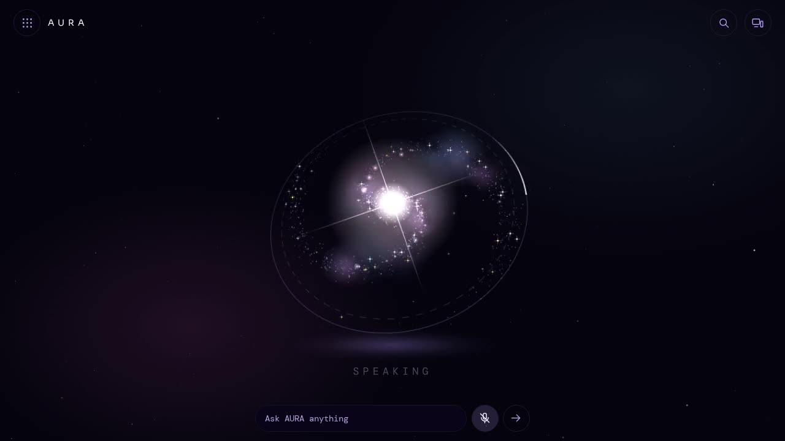

The core says what it is doing
AURA
@@para::AURA is a voice-first@@
> Install
@@install-sh@@@@para::Run it on a machine that has Docker@@
@@features@@
@@number:setup@@ setup
Install
@@para:Install:The line fetches@@
Linux and macOS
@@install-sh@@Windows, in PowerShell
@@install-ps@@@@para:Install:It needs Docker@@
@@para:Install:What each step sets@@
Evidence
What is proven
@@para:What is proven:[`docs/verification.md`]@@
@@para:What is proven:About the films on this page@@